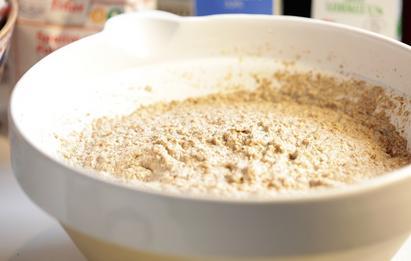

Barley Porridge

Description
There's nothing quite like delicious porridge on a cold morning. It gets you warm and fills you up. You can use whatever grain you like best, add fruit, berries, nuts, and if you add milk, you will end up with a creamy result.
Ingredients
- 200 g coarse barley flour
- 1 lt water
- 2 apples with a handful of hazelnuts or berries
- Salt
Steps
- Boil the water.
- Once the water boils, whisk down the flour a little at a time. Continue boiling for 5 minutes while continuously stirring. The apples and chopped nuts are boiled the last minutes.
- Take the pot off the fire and place it close to the fire for 30 minutes to an hour.
- Top it off with a bit of honey or butter